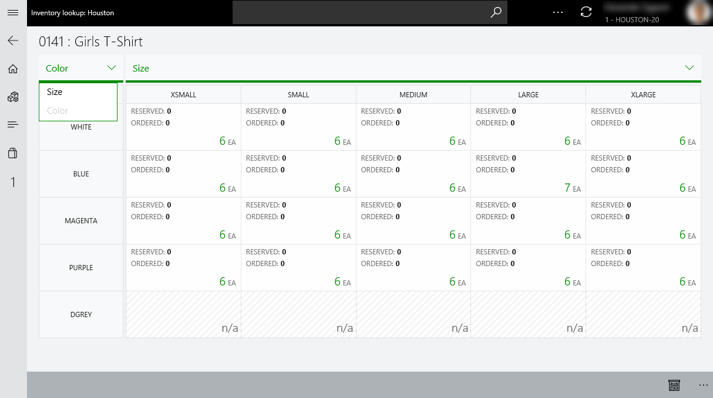
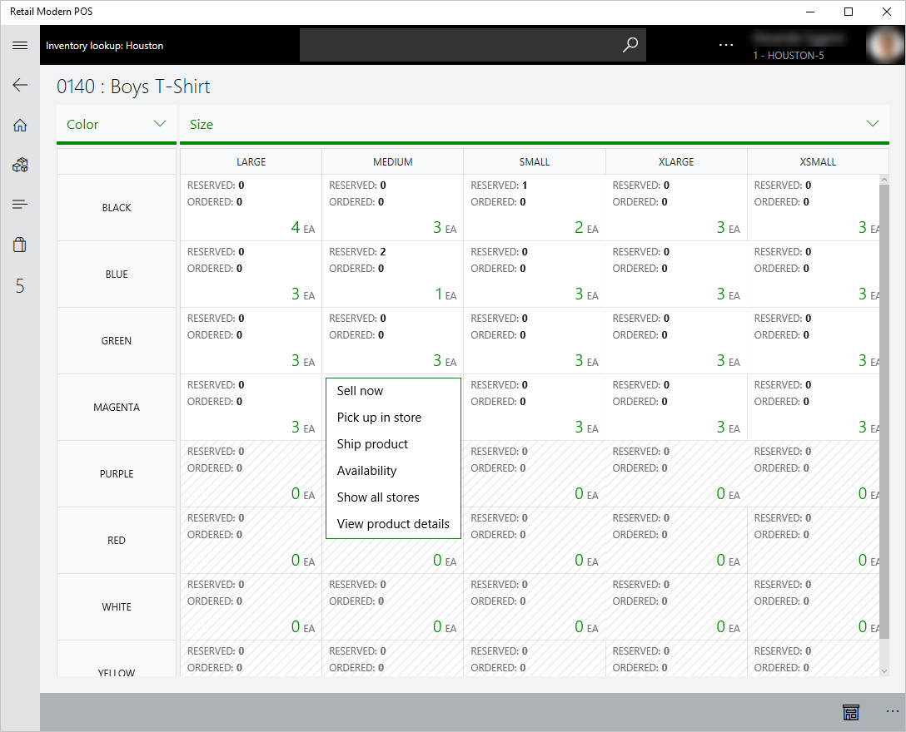

Lagersuche in der Verkaufsstelle (POS)
Important
Dynamics 365 Retail ist jetzt Dynamics 365 Commerce und bietet umfassende Handelsfunktionen für alle Kanäle – von E-Commerce über Shops bis hin zu Callcentern. Weitere Informationen zu diesen Änderungen finden Sie unter Microsoft Dynamics 365 Commerce.
Mithilfe der Lagersuche in der Verkaufsstelle (POS) können Einzelhändler erstklassige Betriebsprozesse in Echtzeit erreichen und Einblicke erlangen, indem sie Filialen, die POS und das Backoffice verbinden. Diese Funktionalität bieten eine genaue Echtzeitansicht des Produktbestands über Filialen und Verteilungszentren hinweg. Einzelhändler werden zudem darin unterstützt, zusätzliche Effektivität und Kosteneinsparungen zu erreichen, indem sie die Bestandsplanung in Echtzeit verbessern.
Mithilfe einer genauen Echtzeitansicht des Bestands in einer gesamten Organisation können Filialmitarbeiter einen rechtzeitigen, hochkarätigen Kundenservice bieten. Am wichtigsten ist der Augenblick, an dem der Debitor bereit ist, eine Kaufentscheidung zu treffen. Es ist wichtig, dass Kassierer in der Filiale Echtzeitbestandsinformationen zur Hand haben, sodass sie eine Produktlieferung und -abholung genau zusagen können.
Sie können die Seite Lagersuche aus dem Arbeitsbereich Retail Modern POS oder Retail Cloud POS öffnen.

Auf der Seite Lagersuche können Sie die numerische Tastatur verwenden, um eine Produktnummer einzugeben. Sie können dann die verfügbare Menge für mehrere Filialen und Lagerorte anzeigen.

Die Mengen Reserviert und Bestellt werden auch für jeden Lagerplatz angezeigt.
- Reserviert – Diese Menge bezieht sich auf den Wert Physisch reserviert aus dem Backoffice für die angegebene Produktnummer am Lagerplatz.
- Bestellt – Diese Menge bezieht sich auf den Wert Insgesamt bestellt aus dem Backoffice für die angegebene Produktnummer am Lagerplatz.
Lagerplätze, für die Bestandsverfügbarkeitsinformationen angezeigt werden
Die Liste der Lagerplätze umfasst zwei Typen von Entitäten:
Filialen – In der Liste werden Filialen angezeigt, die mithilfe der Filiallokatorgruppe für die aktuelle Filiale in der Zentralverwaltung konfiguriert werden.
Verteilungszentren – Verschiedene Typen von Verteilungszentren (beispielsweise Lagerorte) können in Commerce konfiguriert werden. Allerdings zeigt die Liste nur Bestandsverfügbarkeitsinformationen für Verteilungszentren des Standardtyps Standard an.
Note
Bestandsverfügbarkeitsinformationen wird nicht für Lagerorte der Typen Zustellung, Quarantäne und Waren im Arbeitsplan für die POS angezeigt.
Auf der Seite Lagersuche können Sie die Mengen anzeigen, die verfügbar für Zusage (VfZ) für jede Filiale sind, zusätzlich zu den aktuellen verfügbaren Menge, reservierten Mengen und bestellten Mengen. Wählen Sie die Filiale aus, für die die VfZ-Informationen angezeigt werden soll, und wählen Sie dann Verfügbarkeit in Filiale anzeigen aus.

Öffnen der dimensionsbasierten Matrix, um alle Varianten anzuzeigen
Wählen Sie auf der Seite Produktdetails eines Produktmasters oder auf der Seite Lagersuche die Option Alle Varianten anzeigen aus der App-Leiste unten auf der Seite aus. Die Ansicht Dimensionsbasierte Matrix für den ersten Start aus diesen Seiten zeigt die Bestandsverfügbarkeitsinformationen für alle Varianten eines Produkts für die aktuelle Filiale an.
Note
Die Schaltfläche Alle Varianten anzeigen ist nur für Artikelproduktmaster verfügbar, die Produktvarianten haben. Sie ist nicht für eigenständige Produkte oder Bausätze verfügbar.

Wählen Sie Alle Varianten anzeigen auf der Seite Produktdetails eines Produktmasters oder auf der Seite Lagersuche aus, ohne einen Lagerplatz auszuwählen, um zur Ansicht Dimensionsbasierte Matrix zu wechseln, um die Bestandsverfügbarkeitsinformationen für alle Varianten eines Produkts für die aktuelle Filiale anzuzeigen.

Note
In der vorherigen Abbildung ist die Anzeigereihenfolge der Dimensionen alphabetisch, da die Anzeigereihenfolge der Dimensionen für das ausgewählte Produkt nicht konfiguriert wurde.
In der Ansicht Dimensionsbasierte Matrix umfassen die Zellen für die Produktvarianten einen verfügbaren Wert in der unteren rechten Ecke. In der folgenden Tabelle wird die Bedeutung der verschiedenen Werte erklärt.
| Verfügbarer Wert | Beschreibung |
|---|---|
| Numerischer Wert der größer als 0 (null) ist | Eine Variante ist für den ausgewählten Lagerplatz freigegeben worden, und Sie können zusätzliche Aktivitäten in der Zelle ausführen. (Diese Aktivitäten werden detaillierter später in diesem Thema beschrieben.) |
| 0 (null) | Eine Variante ist für den ausgewählten Lagerplatz freigegeben worden, aber der Artikel ist nicht im ausgewählten Lagerplatz verfügbar. Sie können jedoch zusätzliche Aktivitäten in der Zelle ausführen. (Diese Aktivitäten werden detaillierter später in diesem Thema beschrieben.) |
| n/v oder eine inaktive Zelle | Eine Variante ist für den ausgewählten Lagerplatz nicht freigegeben worden, und Sie können keine zusätzlichen Aktivitäten in der Zelle ausführen. |
Sie können auch den Pivot für Dimensionen ändern, indem Sie die neue Dimension auswählen, die zu verwenden ist.


Note
In den vorhergehenden Abbildungen ist die Anzeigereihenfolge der Dimensionen für das ausgewählte Produkt benutzerdefiniert (nicht alphabetisch). Sie basiert auf der Dimensionsanzeigereihenfolge, die im Backoffice festgelegt ist.
Darüber können in der Ansicht Dimensionsbasierte Matrix mehr Aktivitäten ausgeführt werden, mit deren Hilfe die Produktivität eines Filialmitarbeiters gesteigert werden kann. Nachfolgend finden Sie einige Beispiele:
- Ändern Sie den Filiallagerplatz, um die Bestandsverfügbarkeit aller Produktvarianten in anderen Lagerplätzen zu durchsuchen. Diese Lagerplätze umfassen andere Filialen in der Filiallokatorgruppe und den Verteilungszentren des Standardtyps Standard.
- Verkaufen Sie eine einzelne Produktvariante an einen Debitor unter Verwendung von Mitnahme, Filialabholung oder Lieferung an eine Adresse.
- Teilen Sie dem Debitor VfZ-Informationen für eine einzelne Produktvariante an einem bestimmten Lagerplatz mit.

Note
In der vorherigen Abbildung ist die Anzeigereihenfolge der Dimensionen alphabetisch, da die Anzeigereihenfolge der Dimensionen für das ausgewählte Produkt nicht konfiguriert wurde.
Die folgende Tabelle enthält weitere Informationen über die zusätzlichen Aktivitäten, die verfügbar sind.
| Vorgang | Beschreibung |
|---|---|
| Jetzt verkaufen | Fügen Sie die ausgewählten Artikelvarianten der Transaktion hinzu, und leiten Sie den Benutzer zum Transaktionsbildschirm um. (Diese Aktivität ist nicht verfügbar, wenn der ausgewählte Lagerplatz ein Verteilungszentrum ist.) |
| Abholung im Shop | Erstellen Sie einen Debitorenauftrag für die Produktvariante, die vom ausgewählten Lagerplatz abgeholt wird, und leiten Sie den Benutzer zum Buchungsbildschirm um. (Diese Aktivität ist nicht verfügbar, wenn der ausgewählte Lagerplatz ein Verteilungszentrum ist.) |
| Produkt versenden | Erstellen Sie einen Debitorenauftrag für die Produktvariante, die vom ausgewählten Lagerplatz geliefert wird, und leiten Sie den Benutzer zum Buchungsbildschirm um. |
| Verfügbarkeit | Zeigen Sie die VfZ-Informationen für die ausgewählte Variantenkombination für den ausgewählten Lagerplatz an. |
| Alle Lagerplätze anzeigen | Wechseln Sie zur standardmäßigen Lagersuchansicht und heben Sie Bestandsverfügbarkeitsinformationen für die Artikelvariante für alle Filialen in der Filiallokatorgruppe und auch in Verteilungszentren des Typs Standard/Standard hervor. |
| Produktdetails anzeigen | Leiten Sie den Benutzer zur Seite Produktdetails des zugeordneten Produktmasters um. |